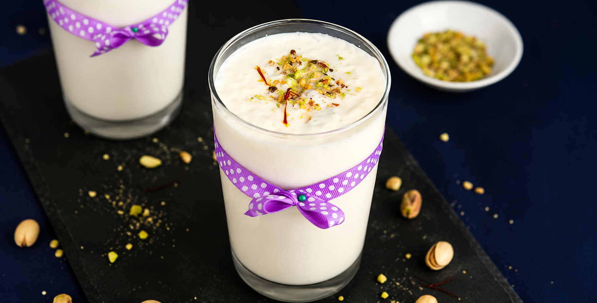

Lassi is a refreshing Indian yogurt-based drink that's smooth, creamy, and perfect for hot days. Traditionally served chilled, it can be enjoyed sweet, salted, or flavored with fruits and aromatic spices, making it a delicious and cooling beverage.
⏱ Preparation time |
🍽 Serves |
⭐ Difficulty |
10 mins |
2 people |
Easy |
Use chilled yogurt for the creamiest texture, and adjust the sugar to suit your taste.